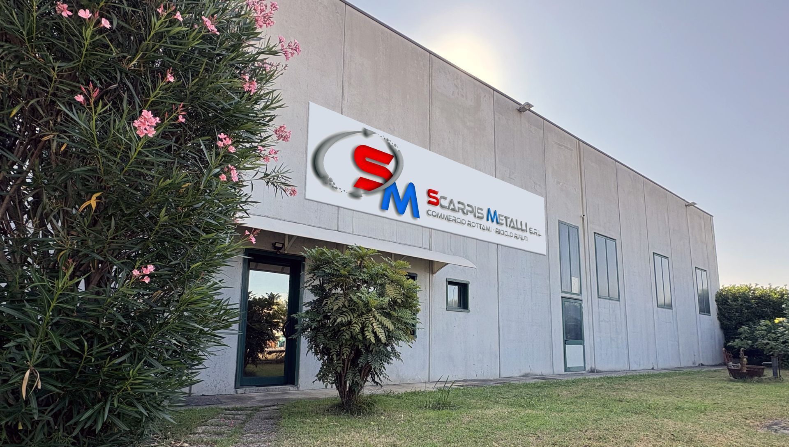
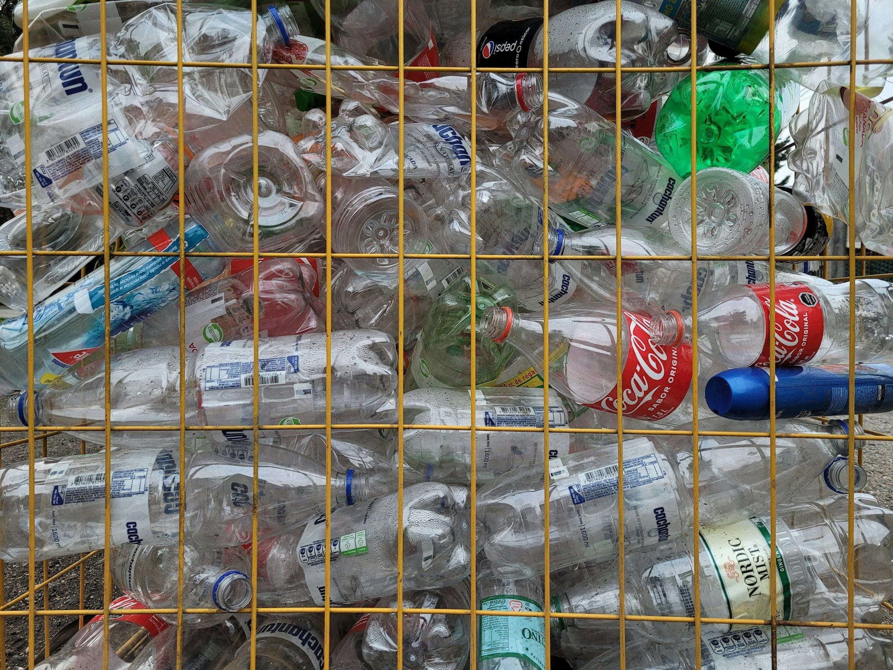
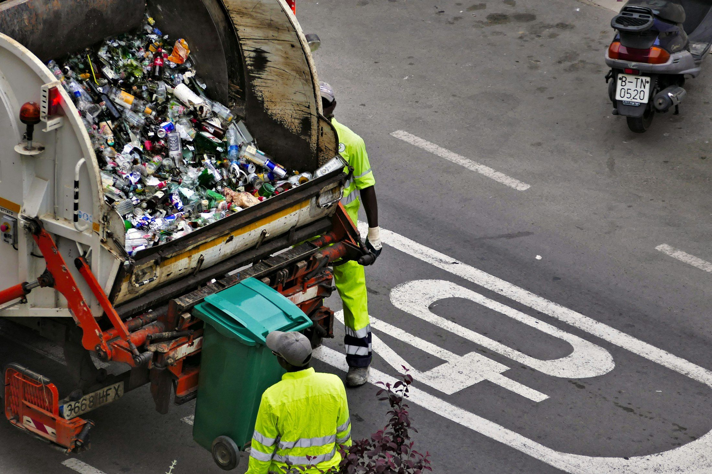

San Fior Treviso
Dal rifiutoalla risorsa.
Commercio rottami - Riciclo rifiuti
Richiedi un preventivo
L'azienda
Scarpis Metalli lavora da San Fior: commercio rottami ferrosi e non ferrosi, raccolta e ritiro rottami presso aziende e pesatura e acquisto rottami, per aziende della provincia di Treviso.

Servizi
Tutto il servizio, un interlocutore.
Per comuni, aziende e privati di Treviso.
Commercio rottami ferrosi e non ferrosi
Ritiro e recupero di metalli ferrosi e non ferrosi.

Raccolta e ritiro rottami presso aziende
Ritiro e recupero di metalli ferrosi e non ferrosi.

Pesatura e acquisto rottami
Ritiro e recupero di metalli ferrosi e non ferrosi.
Riciclo rifiuti metallici
Ritiro e recupero di metalli ferrosi e non ferrosi.
Valorizzazione dei rottami come risorsa economica
Ritiro e recupero di metalli ferrosi e non ferrosi.

Come lavoriamo
Ogni passaggio, tracciato.
Fase 01
Conferimento
Il materiale arriva in impianto e viene pesato.
Fase 02
Controllo
Verifica di codici, documenti e qualità del carico.
Fase 03
Selezione
Separazione per tipologia di materiale.
Fase 04
Recupero
Ciò che è recuperabile torna in filiera.
Fase 05
Nuova materia
Il materiale esce come risorsa.

Lavora con noi
Autisti, operatori, tecnici: cerchiamo persone che conoscono il territorio.
Mandateci il vostro curriculum: lo leggiamo tutto, e vi richiamiamo.
Contatti
Un preventivo, senza giri.
Enti, aziende e privati: indicateci il servizio e la zona, vi rispondiamo con tempi e preventivo.